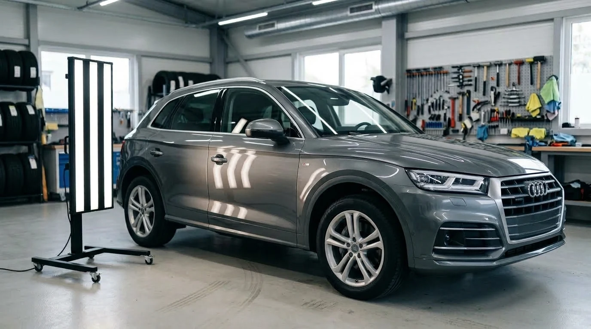
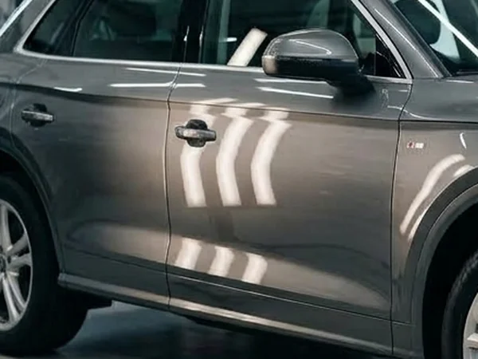
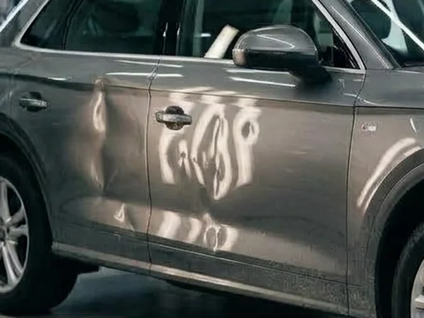
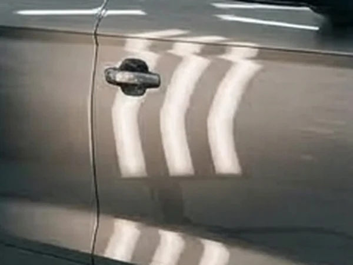
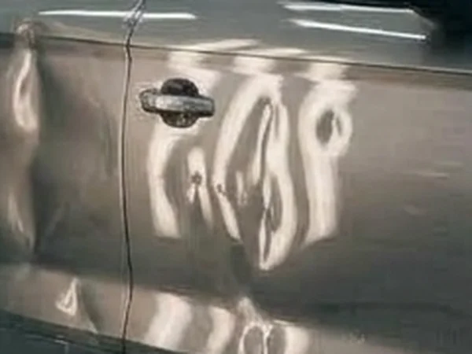
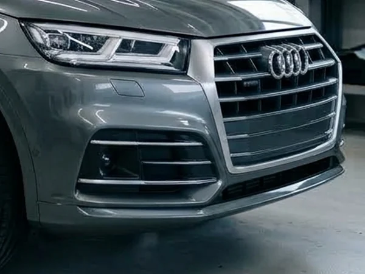
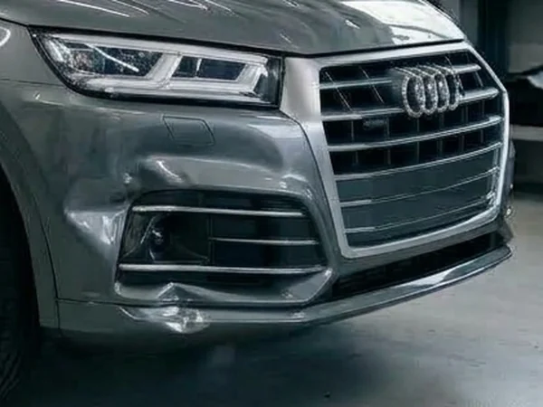

Вм’ятина на парковці
Хтось різко відчинив двері поруч — і на вашому авто з’явилась вм’ятина.

Анімація: під час прокручування вм’ятини на кузові автомобіля по черзі вирівнюються.
Ремонт вм’ятин без фарбування
Вирівнюємо метал без шпаклівки й перефарбування. Надішліть фото вм’ятини — назвемо ціну за 15 хвилин.
Знайома ситуація?
Хтось різко відчинив двері поруч — і на вашому авто з’явилась вм’ятина.
Капот і дах у ямках після граду. Допомагаємо оформити ремонт через страховку (Teilkasko).
За кожну вм’ятину при поверненні лізингу нарахують штраф. Вирівняти дешевше, ніж заплатити.
Рівний кузов з оригінальною фарбою — сильний аргумент за вищу ціну.
Метод PDR — Paintless Dent Repair
Майстер вирівнює метал з внутрішнього боку панелі спеціальними інструментами і крок за кроком повертає його в заводську форму. Контроль — під спеціальною смугастою лампою: доки відображення не стане рівним, робота не закінчена. Фарба не пошкоджується, тому не потрібні ні шпаклівка, ні фарбування.
У відображенні смуг видно кожну, навіть найменшу деформацію металу.
Знімаємо обшивку або працюємо через технологічні отвори. Нічого не свердлимо.
Інструментами з тильного боку повертаємо метал на місце — міліметр за міліметром.
Перевіряємо разом з вами: смуги на кузові мають бути рівними, як на новому авто.
Послуги
Двері, крила, капот, багажник — дрібні й середні вм’ятини без фарбування.
Відновлення капота, даху й панелей. Допомагаємо з оцінкою для страхової.
Огляд авто й усунення вм’ятин до повернення, щоб не платити штрафи.
Передпродажна підготовка та регулярний ремонт. Умови для постійних клієнтів.
Роботи
Потягніть повзунок, щоб порівняти.


ДоПісля

ДоПісля

ДоПісляПриклади-заглушки. Тут будуть фото реальних робіт майстра.
Як замовити
У WhatsApp, Telegram або через форму. Сфотографуйте вм’ятину трохи збоку — так видно відблиски.
Назвемо вартість і час ремонту — зазвичай протягом 15 хвилин у робочий час.
У зручний для вас час. Більшість вм’ятин виправляємо за 1–3 години.
Перевіряємо результат разом під лампою. Даємо гарантію на роботу.
Ціни
Точна ціна залежить від розміру, глибини, місця та доступу до вм’ятини. Найшвидше — надіслати фото.
до 2 см
від 50 €
2–5 см
від 90 €
понад 5 см
від 150 €
капот, дах, панелі
за оцінкою
Чесно
Якщо ваш випадок не для PDR — скажемо одразу по фото й не візьмемо гроші за спробу.
Якщо фарба тріснула чи відкололась, деталь доведеться фарбувати. Підкажемо, що робити.
Коли метал сильно розтягнутий, ідеально рівно вирівняти не вийде.
На раніше шпакльованій ділянці метод PDR не працює.
Відгуки
Тут буде реальний відгук клієнта з Google Maps.
Тут буде реальний відгук клієнта з Google Maps.
Тут буде реальний відгук клієнта з Google Maps.
Майстер за роботою
Майстер
Мене звати [Ім’я]. Понад [N] років я вирівнюю вм’ятини без фарбування — спочатку в Україні, тепер у Німеччині.
Працюю сам, тому знаю кожне авто, яке виїжджає з майстерні. Якщо вм’ятину неможливо прибрати ідеально — скажу чесно ще до початку роботи.
Спілкуємося українською, німецькою та англійською.
Питання
У більшості випадків — ні: панель рівна, заводська фарба ціла. Якщо ідеального результату досягти неможливо, попередимо заздалегідь.
Невелика вм’ятина — від 30 хвилин до 2 годин. Ремонт після граду — від одного до кількох днів.
Так. Після граду допомагаємо з оцінкою пошкоджень і документами для страхової (Teilkasko).
Часто так, але це складніша робота. Надішліть фото — скажемо точно.
Іноді знімаємо обшивку дверей або фару, щоб дістатися до вм’ятини. Усе повертаємо на заводські кріплення.
Так, на виконану роботу надаємо гарантію.
Українською, німецькою та англійською.
Заявка
Відповімо протягом 15 хвилин у робочий час. Фото можна додати прямо тут.
Або напишіть напряму: